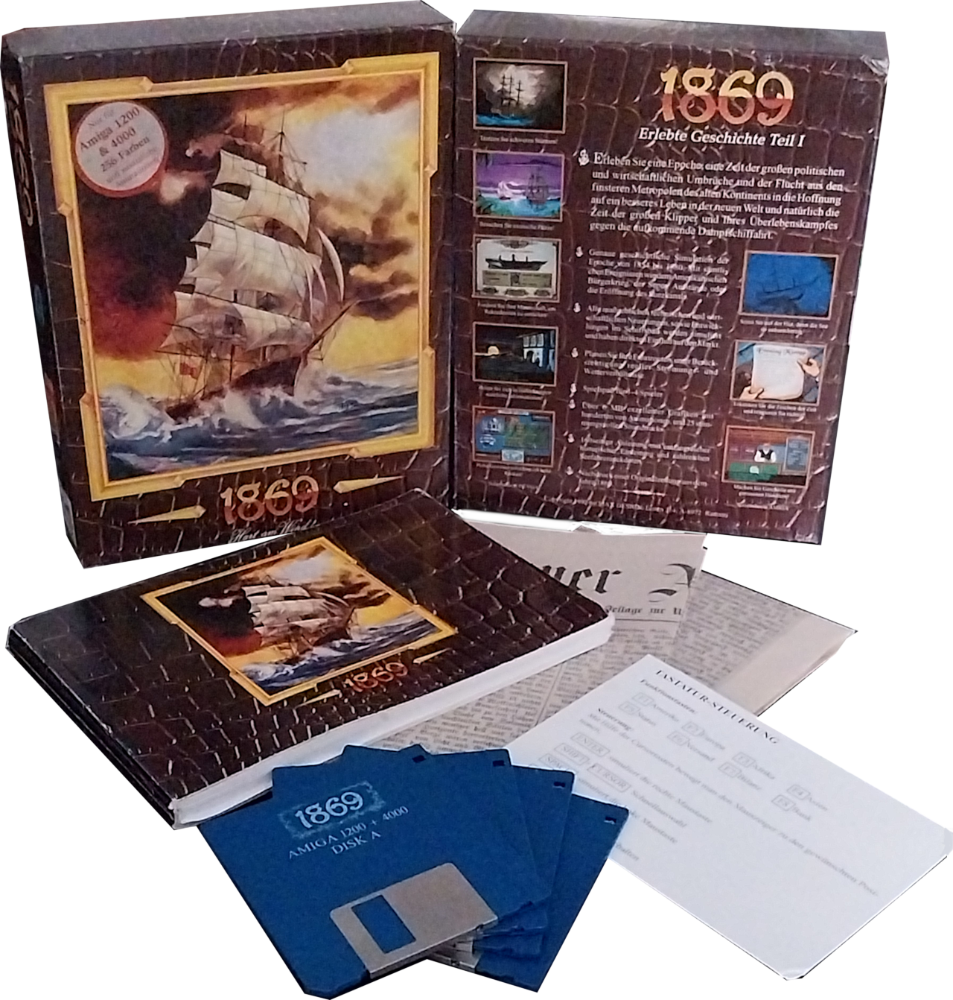
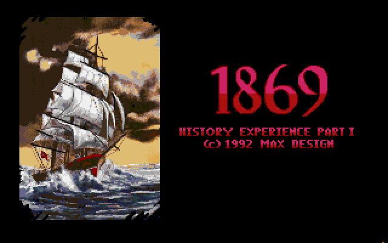
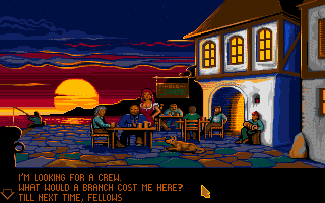
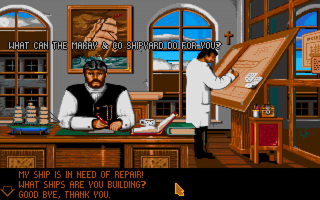

Entwickler: Max Design
Publisher: Max Design / Ikarion Software
Genre: Wirtschaftssimulation
Plattform: Amiga, DOS
Erscheinungsjahr: 1992
In 1869 gründest du eine Reederei im Zeitalter der großen Dampfschiffe. Durch den Kauf neuer Schiffe, den Ausbau weltweiter Handelsrouten und geschicktes Wirtschaften entwickelst du dein Unternehmen zu einer der führenden Reedereien des 19. Jahrhunderts.
9/10 – 1869 gehört für mich zu den besten Wirtschaftssimulationen auf dem Amiga. Der Aufbau einer erfolgreichen Reederei und die ruhige Spielweise machen bis heute einen besonderen Reiz aus.



1869 überzeugt auch heute noch mit seiner außergewöhnlichen Mischung aus Wirtschaftssimulation, historischem Hintergrund und langfristiger Motivation. Wer Handelsspiele und strategische Planung liebt, findet hier einen zeitlosen Klassiker.